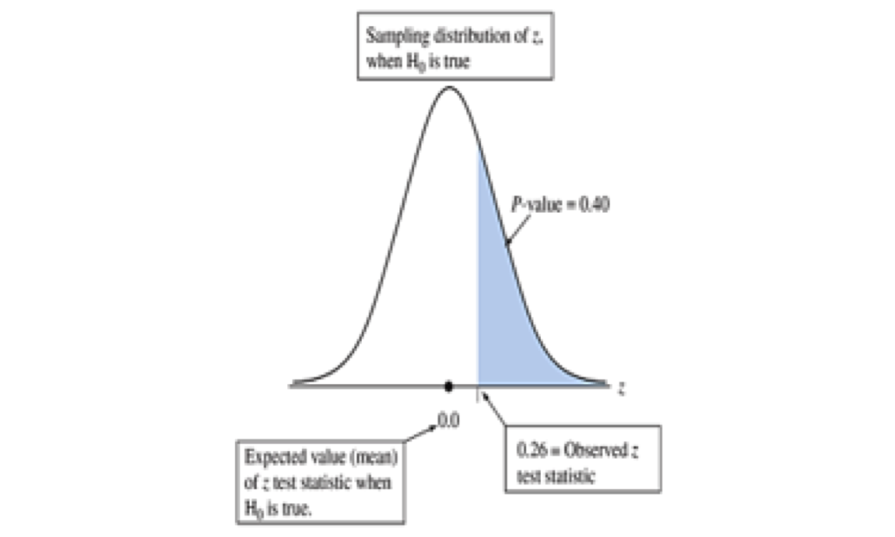
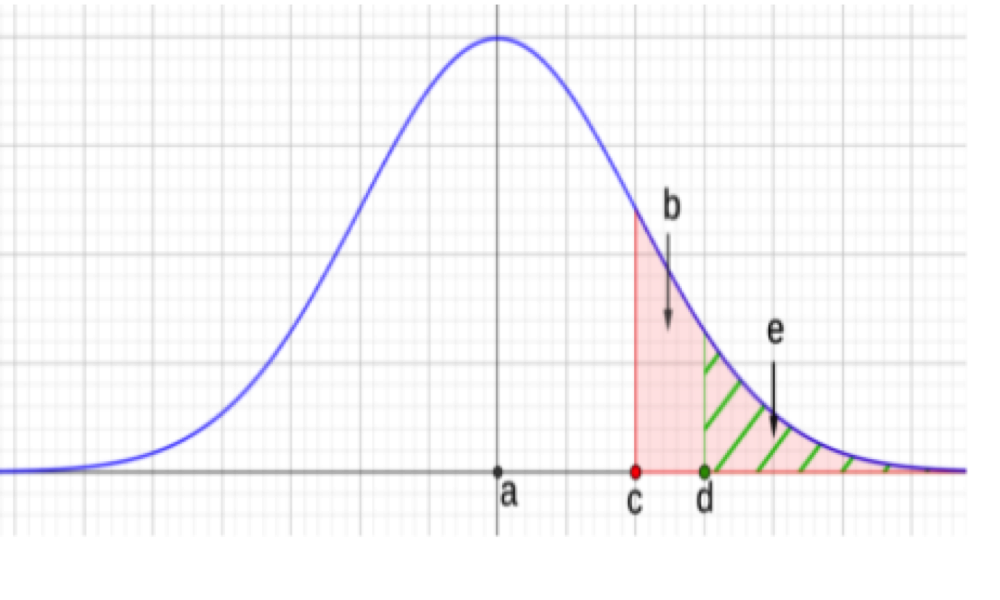
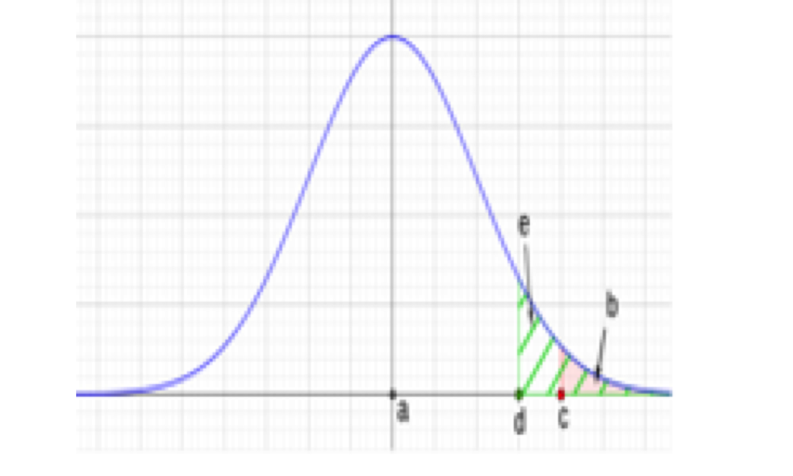

These notes use content from OpenIntro Statistics Slides by
Mine Cetinkaya-Rundel.
These notes use content from OpenIntro Statistics Slides by
Mine Cetinkaya-Rundel.
Hypothesis testing (or significance testing) is a method that uses data to determine if there is sufficient evidence to support certain statements or predication’s (hypotheses).
Hypothesis testing uses probability to quantify how plausible a parameter value is while controlling the chance of an incorrect inference.
In this section, we discuss hypothesis testing for a population proportion. The framework is the same for a population mean or other population parameters.
- Hypothesis Testing begins with setting up hypotheses.
* The null hypothesis is always in the form as \[H_0: \text{parameter} = \text{value}. (𝐻_0 \ \text{is read as “ H-naught”})\] * For alternative hypothesis, there are 3 possible forms for \(𝐻_a\)
*For population proportion, the parameter is \(𝑝\), the value is some number \(𝑝_0\), with \(0≤𝑝_0≤1\). So
The null hypothesis is \(𝐻_0: 𝑝 = 𝑝_0 \ (𝑝_0 \ {\text{is the null value})}\)
The alternative hypothesis is one of the three:
Example. Fracking is a method that uses high-pressure water and chemicals to extract oil and gas from underground rock formations. Let \(𝑝\) be the proportion of people in the United States who oppose the increased use of fracking. Consider the claim, “In the Unites States, the proportion of people who oppose the increased use of fracking is less than 0.50; i.e. they are in the minority.” Form the null and alternative hypotheses.
Solution.
The parameter is the population proportion \(𝑝\),
The null hypothesis \(𝐻_0:𝑝=0.50\)
The alternative hypothesis \(𝐻_𝑎:𝑝<0.50\)
This is a one-sided hypothesis (left-sided).
In words, “the null hypothesis is, the proportion of people oppose fracking equals 0.50”
“the alternative hypothesis is, the proportion of people oppose fracking is less than 0.50”
Example. Someone believes that NFL (professional football) is the favored sport for 40% of the people in U.S., but you suspect this claim.
Form the null and alternative hypotheses.
Solution.
The null hypothesis \(𝐻_0:𝑝=0.40\)
The alternative hypothesis \(𝐻_𝑎:𝑝≠0.40\)
This is a two-sided hypothesis.
In words, “the null hypothesis is, the proportion of people in U.S. think NFL is the favored sport equals 0.40”
“the alternative hypothesis is, the proportion of people in U.S. think NFL is the favored sport does not equal to 0.40”
Example. A campus store plans to sell posters to students. The manger conjects that more than one third of all freshman will buy at least one poster for their dorm rooms.
Form the null and alternative hypotheses.
Solution.
The null hypothesis \(𝐻_0:𝑝= \frac{1}{3}\)
The alternative hypothesis \(𝐻_𝑎:𝑝> \frac{1}{3}\)
This is a right-sided hypothesis.
In words, “the null hypothesis is, 1/3 of freshman buy a poster”
“the alternative hypothesis is, more than 1/3 of freshman buy a poster”
We conduct a hypothesis test under the assumption that the null hypothesis is true. For hypothesis testing about a proportion, we use sample with large enough size and traditional methods based on the central limit theorem (CLT).
We use examples to illustrate various methods for hypothesis testing:
- Using p-value - Using test statistic - Using confidence interval
Example. A campus manger randomly sampled 116 freshmen, 40 said they would buy posters for their dorm rooms. Use this data to test for the conject that more than one third of all freshman will buy at least one poster for their dorm rooms.
Solution. The hypotheses are
\[𝐻_0:𝑝= \frac{1}{3} \ \ \text{versus} \ \ 𝐻_𝑎:𝑝> \frac{1}{3}\]
Check if \(\hat{p}\) is nearly normal under \(H_0\) (use \(p_0\) and \(n\))
\[n= 116, p_0= \frac{1}{3} \implies np_0= 38.67>10 \ \text{and}\ n(1-p_0)= 77.33>10\]
So, if the null hypothesis were true, then
\[𝜇_{\hat{p}}= \frac{1}{3} \ \text{and} \ S.E_{\hat{p}}= \sqrt{\frac{(1/3)*(1-1/3)}{116}}=0.0438\]
By CLT, \(\hat{p} \sim N(1/3,0.0438)\).
Example (contd.) The hypotheses are
\[𝐻_0:𝑝= \frac{1}{3} \ \ \text{versus} \ \ 𝐻_𝑎:𝑝> \frac{1}{3}\]
If \(H_0\) were true, then \(\hat{p} \sim N(1/3,0.0438)\). Also, \(n=116\).
Calculate the p-value:
From the sample data, \(\hat{p} = \frac{40}{116} =0.3448\)
Since it is a right-sided test, the p-value is \(P(\hat{p} > 0.3448) = 0.3967\)
Notes:
The calculation of P-value is the same as the direction of \(𝐻_𝑎\))
There is a minor round off error in the above value due to rounding the sample proportion \(P(\hat{p} > \frac{40}{116}) = 0.3964\).
What is the p-value (how to compute)?
Using P-value
The smaller P-value, the stronger evidence to reject 𝐻_0 in favor of \(H_a\).
Usually, we compare the P-value with a pre-selected significance level 𝛼(which is small)—the default number is 𝛼=0.05.
If P-value \(≤𝛼\), then we reject \(𝐻_0\) in favor of \(H_a\) ;
If P-value \(>𝛼\), then we lack strong evidence to reject \(𝐻_0\), and \(H_a\) cannot be substantiated.
In our example, P-value = 0.3967, so we do not have strong evidence to reject \(𝐻_0\).
Example (cont.): The hypotheses are \(H_0:𝑝= \frac{1}{3} \ \ \text{versus} \ \ 𝐻_𝑎:𝑝> \frac{1}{3}\)
The sampling distribution is: \(\hat{p}\sim𝑁(1/3, 0.0438)\)
The observed statistic is: \(\hat{p}= \frac{40}{116} \approx 0.3448\)
The scaled test statistic \(z\) is: \(z= \frac{\hat{p} - p_0}{se_0}= \frac{0.3448-\frac{1}{3}}{0.0438}= 0.26\)

Using Test Statistic:
For given significant level \(𝛼\), find rejection region (R.R.):
So, for the right-sided test, for \(𝛼=0.05\), the R.R. \(=\{𝑍>1.645\}\) since \(z_{0.05}=1.645\) (check \(𝑃(𝑍>1.645)=0.05\)).
If test statistic is in the R.R., we reject \(𝐻_0\) in favor of \(𝐻_𝑎\) ;
If test statistic is not in the R.R, we lack strong evidence to reject \(𝐻_0\), and \(𝐻_𝑎\) cannot be substantiated.
In our example, \(𝑧=0.26<1.645\), not in the R.R. So, we do not have strong evidence to reject \(𝐻_0\).
The drawing on the right represents a right-tail test where we fail to reject the null hypothesis:
P-Value \(>𝛼\)
\(c\): test static,
The area of shaded pink region is the P-value.
The area of shaded green region is the significance level \(𝛼\),
\(d\): score related to \(𝛼 \ (𝑑=𝑧_𝛼\ \text{for}\ 𝑁(0,1))\).
The drawing on the lower right represents a right-tail test where we reject the null hypothesis: P-Value \(<𝛼\)


Using P-value or the z-test statistic (rejection region) give the same conclusion, for the same specified significance level \(𝛼\).
We call this as 1-proportion \(𝑧\)-test.
For hypothesis testing, we are in the setting that \(\hat{p}\) is normally distributed: \(\hat{p} \sim N(p_0, \sqrt{\frac{p_0(1−𝑝_0)}{n}})\) . It is called the null distribution as if the null hypothesis were true (i.e., \(𝑝_0\) is used).
Fracking is a drilling method that uses high-pressure water and chemicals to exact oil and natural gas from underground rock formations. Consider the claim: “In the U. S., the proportion of people who oppose the use of fracking is less than 0.5”. Data from a Pew Research survey conducted in November 2014 shows, in a sample of 1353 people, 47.1% (637 of 1353) were opposed to the increased use of fracking, the rest either favored or no definite opinion.
Questions to explore:
Step 1: Form Hypotheses
\(H_0:𝑝=0.50\)
\(𝐻_𝑎:𝑝<0.50\) [This is a left-sided hypothesis (one-sided)]
Step 2: Check conditions (independence and large size):
Step 3: Compute P-value
If \(𝐻_0\) were true, \(S.E._{\hat{p}} =\sqrt{((0.5(1−0.5))/1353)}=0.01359\), then \(\hat{p}\sim𝑁(0.5, 0.0136)\).
The observed statistic is \(\hat{p}=0.47\)
The test statistic is \(z=(\hat{p}−𝑝_0)/𝑆.𝐸._\hat{p}= (0.47−0.5)/0.01359=−2.2075\)
Compute P-Value: \(P(\hat{p} < 0.47)=P(Z<−2.2075)=0.0136\)
Step 4: Make Decision:
Note: for left-sided test, with 𝛼=0.05, the rejection region is R.R = \(\{Z <-1.645\}\) ({\(Z < -Z_𝛼\)})
If we change the question to: “How strong is the evidence to support the claim that those opposing the increased use of fracking in the U.S. are not even?”
Then the alternative hypothesis is \(H_a : p \neq 0.5\) (This is two-sided)
For \(\hat{p} = 0.47\), the test statistic is \(z = -2.21\), and the P-value is
\[P(|Z| > 2.21)= P(Z <-2.21) + P(Z >2.21)= 2P(Z <-2.21) = 2P(\hat{p} < 0.47)= 2(0.0136)= 0.0272\]
The R.R = \(|z| > z_{\frac{𝛼}{2}} = {Z < -z_{\frac{𝛼}{2}}} \ \text{or} \ Z > - z_{\frac{𝛼}{2}}\)
For \(𝛼=0.05\), the two-sided R.R \(={|𝑍|>1.96}\).
Using confidence intervals to do hypothesis tests if - \(𝐻_𝑎\) is two-sided; - the confidence level and significance level add to 100%.
Steps
Construct \(\color{blue} {CI: \hat{p} \pm z_{\frac{𝛼}{2}} \times \sqrt{\frac{\hat{p}(1-\hat{p})}{n}}}\)
Make decision
Null value \(𝑝_0\) is not included in the interval → reject the null hypothesis.
Null value \(𝑝_0\) is included in the interval →cannot reject the null hypothesis.
If the hypotheses are \(𝐻_0:𝑝=0.33\), \(𝐻_𝑎:𝑝\neq 0.33\) For a sample with 𝑛=50, \(\hat{p}=0.24\), use CI to test hypothesis.
check success and failure condition:
n\(\hat{p}\)= 50 * 0.24 = 12>10, n(1-\(\hat{p}\)) = 50*0.24=12>10
\(S.E_{\hat{p}} = \sqrt{\frac{0.24*(0.76)}{50}}=0.06\) (Note: we use \(\hat{p}\) for C.I)
for 95% confidence level, \(z_{0.025}\)= 1.96, the 95% CI is \(\hat{p} \pm z_{0.025} \times S.E._{\hat{p}} = 0.24 \pm 1.96 \times 0.06\), That is, (0.122,0.358)
-The null value \(p_0\) =0.33 is in the 95% CI, so we failed to reject \(H_0\) in favor of \(H_a.\)
Note: Not reject \(H_0\) does not necessarily mean \(H_0\) is true.
Hypothesis tests are not flawless.
In the court system, innocent people are sometimes wrongly convicted and the guilty sometimes walk free.
Similarly, we can make a wrong decision in statistical hypothesis tests as well.
In statistical hypothesis tests, we have tools necessary to quantify how often we make errors in statistics.
Which error do you think is the worse error to make?
“Better that ten guilty person escape than that one innocent suffer”
\(-\) William Blackstone
There are two competing hypotheses: the null and the alternative. In a hypothesis test, we make a decision about which might be true, but our choice might be incorrect.
\[ \begin{align} {} && {\textbf{Decision}} \\ && && \text{fail to reject}\ H_0 && \text{reject}\ H_0 \\ \hline && H_0 \ \text{true} && {{\checkmark}} && {\color{red}{Type \ I \ Error}} \\ {\textbf{Truth}} && H_a \ \text{true} && {\color{red}{Type \ II \ Error}} && {{\checkmark}} \\ \hline \end{align} \]
\(\color{blue}{\text{P(Type I error)}= P(\text{reject}\ 𝐻_0 | 𝐻_0 \ \text{true})}\)
\(\color{blue}{\text{𝑃( Type II error)}=P(\text{not reject}\ 𝐻_0| 𝐻_𝑎 \ \text{true} )}\)
\(\color{blue}{\text{P(Type I error)}= P(\text{reject}\ 𝐻_0 | 𝐻_0 \ \text{true})= \alpha}\) (We reject \(H_0\) if P-value \(≤𝛼\))
\(\color{blue}{\text{𝑃( Type II error)}=P(\text{not reject} \ 𝐻_0| 𝐻_𝑎 \ \text{true})}= 1 - P(\text{reject}\ H_0|H_a \ \text{true})= \beta\)
Choosing smaller value of 𝛼 means (less rejection) less chance to make Type I error.
When using small values of \(𝛼\), the P-value needs to be smaller so that we can reject \(𝐻_0\), so it leads to less rejection, so smaller Type I error.
However, the smaller value of 𝛼 means (less rejection) leads to more chance to make Type II error.
Choosing larger value of 𝛼 leads larger Type I error but smaller Type II error.
While the traditional significance level is 0.05, it is helpful to adjust the significance level based on the application.
Select a level that is smaller or larger than 0.05 depending on the consequences of any conclusions reached from the test.
If making a Type I Error is dangerous or especially costly, we should choose a small significance level (e.g. 0.01). Under this scenario we want to be very cautious about rejecting the null hypothesis, so we demand very strong evidence favoring \(𝐻_a\) before we would reject \(𝐻_0\).
If a Type II Error is relatively more dangerous or much more costly than a Type I Error, then we should choose a higher significance level (e.g. 0.10). Here we want to be cautious about failing to reject \(𝐻_0\) when the null is actually false.
In two sided hypothesis tests we are interested in whether \(p\) is either above or below some null value \(p_0: H_a: p \neq p_0\).
In one sided hypothesis test we are interested in \(p\) differing from the null value \(p_0\) in one direction (and not the other):
If there is only value in detecting if population parameter is less than \(p_0\), then \(H_a: p<p_0\).
If there is only value in detecting if population parameter is greater than \(p_0\) than \(H_a: p>p_0\).
Two-sided tests are often more appropriate as we often want to detect if the data goes clearly in the opposite direction of our alternative hypothesis as well.